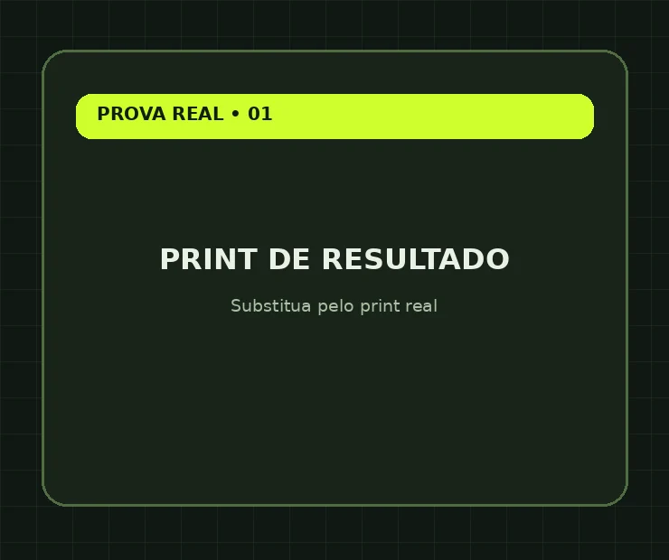
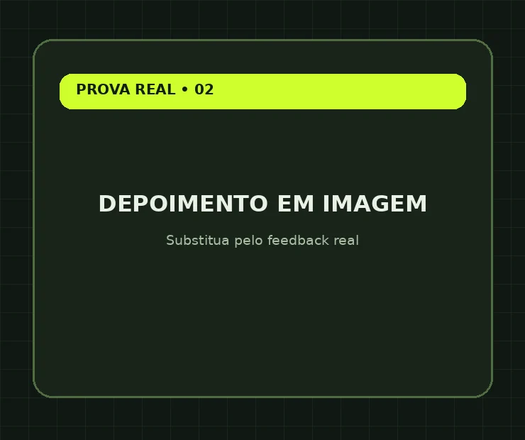

Descubra o que vender.
Comece com um produto próprio ou identifique uma oferta para divulgar como afiliado. Aprenda a observar oportunidades e escolher um caminho viável.
VOCÊ SAI COMUma direção para sua oferta
Aprenda a encontrar o que vender, montar sua oferta, criar páginas e colocar anúncios no ar com ajuda da inteligência artificial — seguindo um caminho simples, mesmo que esteja começando agora.
Hoje é fácil pedir para uma IA gerar ideias, criar textos e até montar uma página. Difícil é transformar essas partes soltas em uma oferta pronta para o mercado.
É aí que muita gente trava: aprende um pouco de cada coisa, mas não chega a publicar a própria estrutura. Outras pessoas já têm um produto e não sabem como colocá-lo na frente de compradores.
O que você precisa não é conhecer todas as ferramentas. É saber a ordem do que fazer e como colocar cada etapa em prática.
Você aprende o processo e usa a IA para acelerar a execução — sem depender de dominar uma profissão diferente para cada etapa.
Comece com um produto próprio ou identifique uma oferta para divulgar como afiliado. Aprenda a observar oportunidades e escolher um caminho viável.
Estruture sua apresentação de vendas e, se for produzir algo próprio, use a IA para ajudar na criação do material que será entregue.
Aprenda a construir páginas com inteligência artificial, organizar os elementos da oferta e colocar sua estrutura online.
Entenda o básico do Meta Ads, aprenda a subir campanhas e acompanhe métricas para tomar decisões sobre os primeiros testes.
Resultados e depoimentos de projetos, clientes e trabalhos anteriores.


Essas provas se referem a experiências anteriores de clientes e projetos, não a resultados de alunos deste treinamento. Resultados variam conforme cada operação.
Este treinamento foi pensado para quem quer colocar uma oferta para rodar sem passar meses estudando assuntos soltos.
As aulas acompanham o caminho que você precisa percorrer para construir sua estrutura de vendas online.
Materiais e estratégias complementares para ampliar suas opções de execução depois de estruturar sua oferta.
Venda no WhatsApp: uma alternativa para trabalhar conversas e vendas diretas.
Uma aplicação específica para a comunicação desse tipo de oferta.
Estruturas alternativas para testar jornadas de conversão com quiz.
Modelos de referência para adaptar e acelerar a produção dos seus anúncios.
A proposta é que você deixe de apenas consumir tutoriais e siga uma sequência para colocar sua própria oferta no mercado.
Entre na Fábrica de Vendas com IA e tenha acesso ao treinamento e aos quatro bônus para montar e começar a testar sua própria operação de vendas online.
Pagamento realizado em ambiente externo de checkout seguro.
7 dias de direito de arrependimento
Para compras online, conforme a legislação aplicável.
Sim. O treinamento parte da escolha do que vender e apresenta um caminho para organizar oferta, página e primeiros testes. Você precisará dedicar tempo à execução.
Não. Você pode estudar tanto o caminho de criar seu próprio produto quanto o de trabalhar com uma oferta como afiliado.
Não é necessário ter experiência em programação. Você vai usar ferramentas de IA e seguir as instruções práticas, mas precisa ter familiaridade básica com computador e internet.
Para executar a parte de tráfego pago, sim. O investimento em mídia é separado do valor do treinamento. Algumas ferramentas também podem ter custos próprios, dependendo da opção escolhida.
Não. Você aprende a montar e testar uma estrutura. Vendas dependem de vários fatores, incluindo demanda, oferta, criativos, investimento e otimização.
Sim. A proposta é apresentar as etapas e ferramentas necessárias para que você consiga executar o processo no seu ritmo.
Um processo para transformar o que você quer vender em uma oferta organizada e colocá-la em circulação.
Quero começar agora